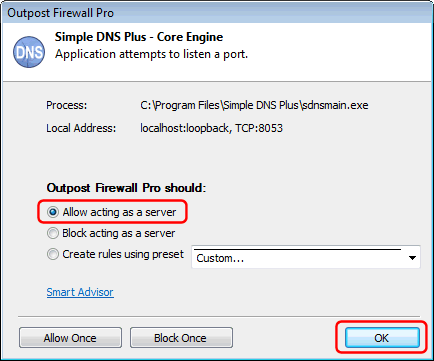
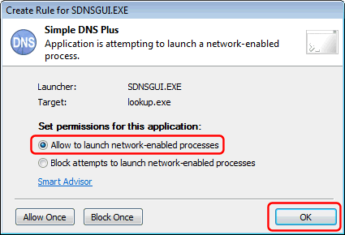

The Output Firewall Pro monitors network traffic by application.
Simple DNS Plus consists of several executable module (applications) which each must be granted access to the Internet. These modules are:
- "Simple DNS Plus - Core Engine" (sdnsmain.exe)
- "Simple DNS Plus - DNS Look Up" (lookup.exe)
- "Simple DNS Plus - DNS Record Editor" (editrecs.exe)
- "Simple DNS Plus - GUI" (sdnsgui.exe)
You may get each of the following 3 Outpost Firewall Pro alert dialogs for each of the Simple DNS Plus modules listed above:
1) "Application is requesting an outbound connection"
Select "Allow all activities for this application" and click the "OK" button:
2) "Application attempts to listen a port"
Select "Allow acting as a server" and click the "OK" button:

3) "Application is attempting to launch a network-enabled process"
Select "Allow to launch network-enabled processes" and click the "OK" button:
